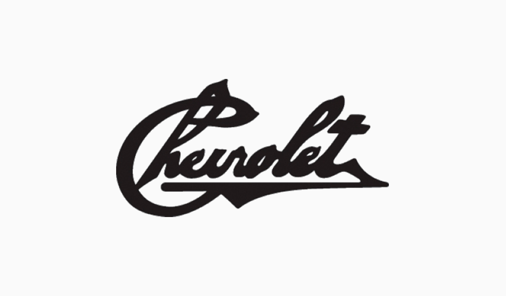
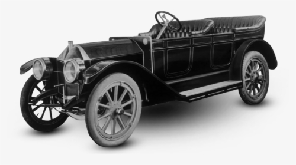
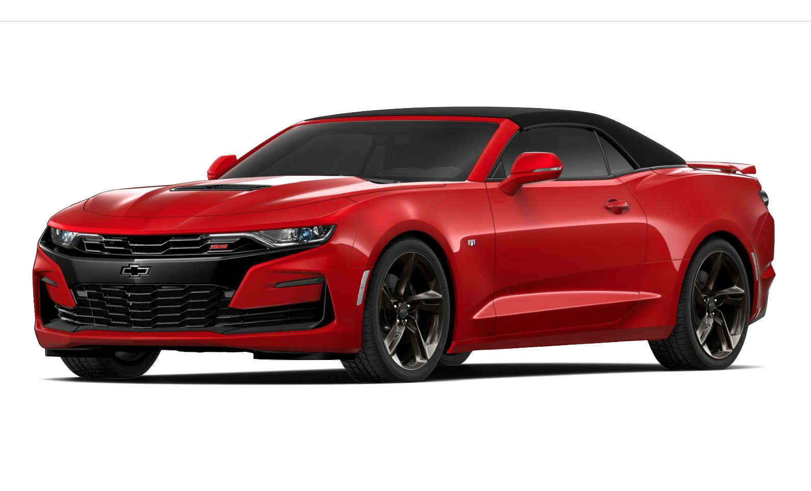
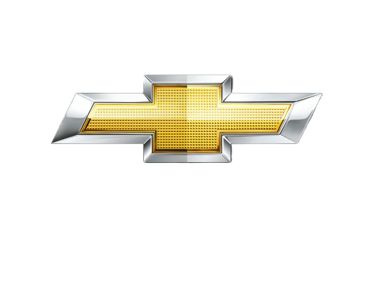

Em 1911, surgia a Chevrolet. Fruto da paixão pelos automóveis e da determinação do jovem piloto suíço Louis-Joseph Chevrolet. Nascido em La Chaux-de-Fonds, na Suíça no Natal de 1878, ele foi o co-fundador da marca – que se chamava Chevrolet Motor Car Company of Michigan - ao lado do empresário William C. Durant.
Juntos criaram e construíram uma das mais conhecidas marcas de automóveis no mundo, a Chevrolet. No início, o logotipo que estampava o Chevrolet 490, um modelo com motor de 4 cilindros e 20 cv, sucesso de vendas nos EUA, era apenas o nome da marca levemente estilizado.
Três anos mais tarde, em 1914, Louis Chevrolet criaria um dos símbolos mais conhecidos dentro da indústria automobilística mundial: a gravata Chevrolet. A história é imprecisa quanto à fonte inspiradora de Chevrolet. Alguns acreditam que o logo surgiu a partir de um papel de parede de um hotel em Paris. Outros – incluindo sua mulher – afirmam que o logo nasceu inspirado em uma figura impressa em suplemento de um jornal dominical.


Classic Six: o pioneiro a utilizar a gravata
O primeiro modelo a estampar a gravata Chevrolet foi o Classic Six, em 1914. Quatro anos mais tarde, a marca seria incorporada a General Motors. O mesmo logo presente no Classic Six estampou os modelos da Chevrolet até meados 1930. Ele tinha o fundo azul, com bordas brancas e levava o nome da marca escrito no interior.
Durante os anos 30 até os anos 70, o azul permanecia como a principal cor da gravata. As variações de logo se davam pelas gravatas inseridas dentro de escudos elaborados, como no memorável Chevrolet Bel Air.
Vermelho: sinônimo de velocidade
Em 1986, um símbolo na cor vermelha apareceu no capô dianteiro do Fórmula Indy V8, equipado com motor da General Motors. Esses bólidos foram destaque nas temporadas da categoria norte-americana nos anos 1980.
Graças à categoria da Fórmula Indy o vermelho transformou-se em símbolo de desempenho e velocidade. Sendo assim, foi a tonalidade predominante nas logomarcas dos carros de alta performance da Chevrolet, tais como o Camaro.
Esse símbolo ficou tão arraigado à marca que a campanha publicitária da época usava o slogan “Cuidado com a Gravata Borboleta Vermelha” (Beware The Red Bow Tie), como se o automóvel com aquela marca também pudesse fazer parte do “vestuário” do consumidor, como uma forma de identificação da personalidade dele.


Duas gerações da gravata dourada
A partir de 2002, a General Motors decidiu padronizar a gravata borboleta, tanto na forma, quanto na cor e textura. Ela se tornou peça fundamental do “DNA” global da Chevrolet. Sua primeira aparição veio na picape SSR, de 2003. No Brasil, o SSR foi exibido no Salão Internacional do Automóvel de São Paulo, em 2004.
A primeira geração da gravata dourada já seguia o padrão de “efeito jóia”, uma aparência de maior brilho à logomarca, que remete à imagem de valor, qualidade e robustez a toda uma família de veículos.
A segunda geração da gravata, lançada recentemente, mostrou uma nova evolução. A superfície ganhou textura mais acetinada e as bordas cromadas ficaram mais largas, a fim de reforçar ainda mais logomarca. E que agora está presente em toda e qualquer comunicação que envolva a marca, como este press release, por exemplo.
O piloto que virou marca de automóveis
Durante sua infância, Louis Chevrolet passou o tempo nas aldeias de Bonfol e Beurnevésin, que estavam perto da fronteira francesa. Em 1886, a família de Chevrolet saiu da Suíça para viver em Beaune, na região de Côte-d'Or, onde o jovem Louis, filho de um fabricante de relógios suíços, interessou-se por mecânica.
Como adolescente, chegou a ser guia de uma adega local. Certa vez, impaciente com a decantação lenta do vinho de barril a barril, inventou uma bomba que acelerava o processo – a engenhoca chegou a ser usada extensivamente na Borgonha, famosa região produtora de vinhos da França, durante décadas. Ele também construiu e vendeu a sua própria bicicleta chamada de Frontenac. Esse nome seria mais tarde utilizado para seus carros de corrida.
O primeiro contato com mecânica foi entre 1895 a 1899, na Roblin Mecânica, especializada no reparo de bicicletas e carruagens, onde aprendeu os fundamentos da arte da mecânica.